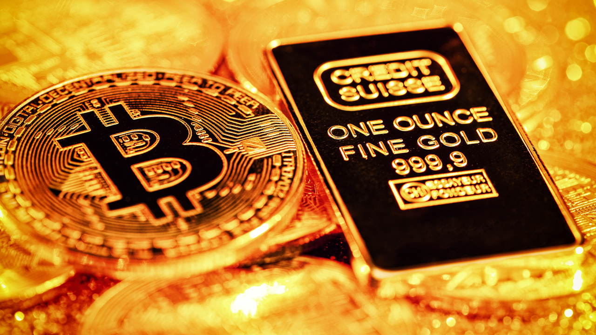

Bitcoin’s Rising Correlation With Gold Indicates Investors See It as a Safe-Haven, Say Bank of America Market Strategists
August 30, 2022
Amid the economic uncertainty affecting a myriad of countries worldwide, Bank of America Securities market strategists explained in a note this week that the leading crypto asset bitcoin has been correlated with the well known precious metal gold. Bank of America analysts Alkesh Shah and Andrew Moss noted “that investors may view bitcoin as a relative safe haven as macro uncertainty continues.”
Bank of America’s Market Strategists Say Bitcoin’s Rising Correlation With Gold Indicates ‘Investors May View Bitcoin as a Relative Safe Haven’
Market strategists from Bank of America’s securities division, Alkesh Shah and Andrew Moss, detailed this week that bitcoin and gold have been highly correlated in recent times. The news follows the recent report published by the crypto data provider Kaiko, which says bitcoin has been less volatile than the Nasdaq and S&P 500 indices. According to the Bank of America strategists, bitcoin’s (BTC) price fluctuations, in terms of other global assets, have caused investors to think BTC is a safe-haven asset. “A decelerating positive correlation with SPX/QQQ and a rapidly rising correlation with XAU indicate that investors may view bitcoin as a relative safe haven as macro uncertainty continues and a market bottom remains to be seen,” Bank of America’s securities division analysts wrote.
On Monday, October 24, both bitcoin (BTC) and gold prices have been range bound, and have been less volatile in comparison to equity markets. BTC is trading for just above $19K per unit, while an ounce of .999 fine gold is exchanging hands for 1,646.70 nominal U.S. dollars. Bank of America’s Shah and Moss have been monitoring the 40-day correlation with gold, which is around 0.50 this week. The 0.50 rating is a lot closer and shows a stronger correlation to the precious metal than the zero rating the leading crypto asset BTC recorded in August. The move comes at a time when macro uncertainty has heightened, and analysts have warned that U.S. Federal Reserve rate hikes could cause a U.S. Treasuries liquidity crisis. Market observers expect an aggressive rate hike next month, but strategists also believe the Fed will pivot by December. Both gold and BTC have fallen a great deal since the two asset’s all-time price highs. Gold for instance tapped a lifetime price high against the U.S. dollar on March 8, 2022, when it reached $2,074 per ounce. Gold has lost 20.49% against the U.S. dollar since the all-time high 230 days ago. The crypto asset bitcoin (BTC) has shed 72% against the greenback during the last year, after tapping $69,044 per unit on November 10, 2021. Gold today has an overall market capitalization of around $10.895 trillion, while BTC’s market capitalization is around $369 billion.